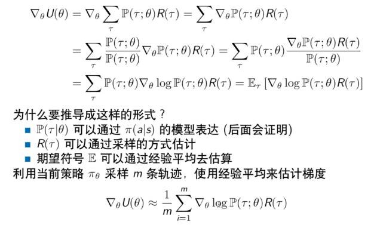
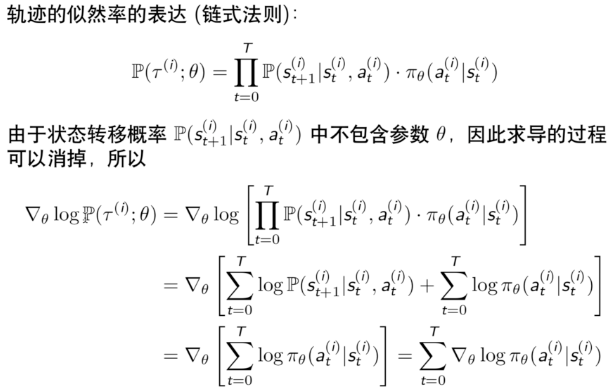
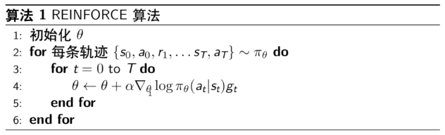
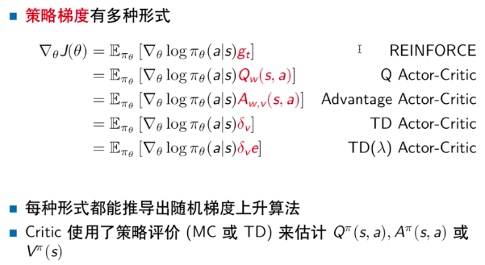
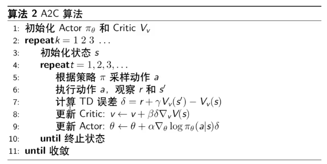
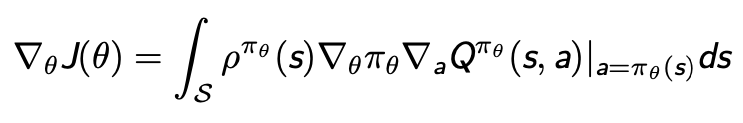
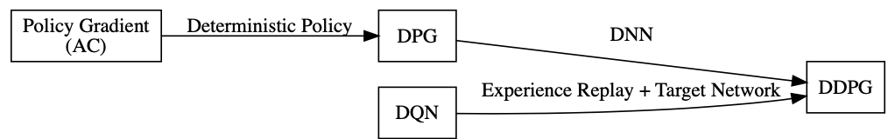
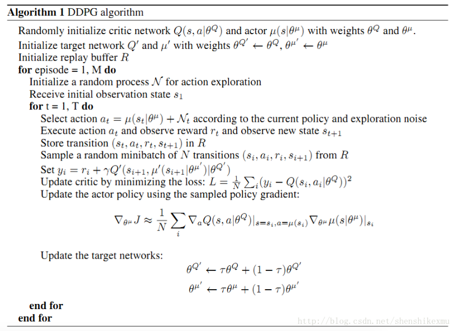
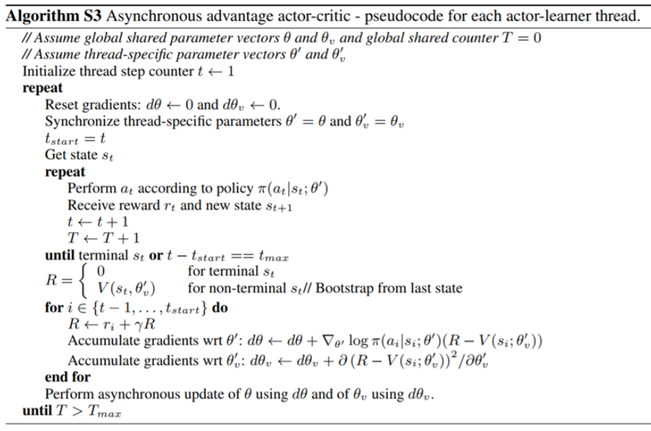
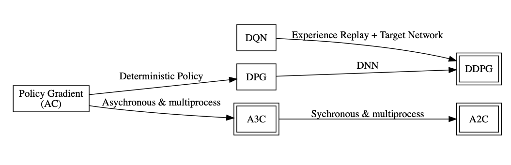

强化学习分类
-
策略梯度算法
- 直接用神经网络表示策略
- 神经网络输出N维的向量，每一维表示选择该动作的概率大小
- $$Net(state)=[P_{action1},P_{action2},P_{action3},…]$$
-
值函数算法
- 用神经网络拟合Q或者V函数
- 得到Q之后，利用贪婪策略等选择下一步动作
- \(Net(state,action)=Q\)或者\(Net(state)=V\)
-
Actor-Critic
- 学习值函数
- 学习策略
- 介于上面两者之间
策略梯度算法优缺点
-
优点
- 更好的收敛性
- 有效处理高维和连续的动作空间
- 能够学到随机策略
- 不会导致策略退化
-
缺点
- 容易陷入局部最优
- 难以评价一个策略，评价结果方差很大
策略退化
- 模型的能力不够导致
- 值函数估计不准导致
我们从经典的A2C算法入手讲解策略梯度算法
优化目标
- $$max_{\theta }U(\theta )=max\sum_{\tau }P(\tau |\theta )R(\tau )$$
- 其中，\(\theta \)表示策略网络的参数；\(\tau \)表示一段状态转移轨迹；\(R(\tau ) \)表示该轨迹的最终回报值；\(P(\tau |\theta )\)表示当策略网络的参数为\(\theta \)时，出现\(\tau \)的概率大小。
- 在一个固定的环境再，一般来说，\(R(\tau ) \)是稳定不变的。
优化方法
-
梯度表达式
- $$\frac{\partial U(\theta )}{\partial \theta }=\frac{\partial \sum_{\tau }P(\tau |\theta )R(\tau )}{\partial \theta }$$
-
似然率角度梯度求解

-
似然率梯度的理解
- \(\frac{\partial logP(\tau |\theta )}{\partial \theta }\)是轨迹\(\tau \)的出现概率随\(\theta \)变化最陡的方向。
- 沿正方向，轨迹出现的概率会变大
- 沿负方向，轨迹出现的概率会变小
- \(R(\tau )\)控制了参数更新的方向和步长，R是正的，就让轨迹出现的概率变大，并且R越大，步长的幅度越大；相反亦然。
- 最终增大了高回报率轨迹出现的概率，减少了低回报率轨迹出现的概率
- \(\frac{\partial logP(\tau |\theta )}{\partial \theta }\)是轨迹\(\tau \)的出现概率随\(\theta \)变化最陡的方向。
-
轨迹分解到状态

-
算法流程

Actor-Critic
- 上面的reinforce算法中，\(g_{t}\)的方差非常大，为了减小方差，我们引入了Critic函数\(Q_{w}(s_{k},a_{k})\approx \sum_{t=k}^{T}\gamma ^{t-k}R(s_{k},a_{k})\)代替\(g_{t}\)
- 再进一步，由于每个Q都是正的，会导致网络对于任何轨迹都想提高其出现的概率，因此，引入一个基线。基线的选择为当前状态的V值。由此得到一个优势函数：
- $$A^{\pi _{\theta }}(s,a)=Q^{\pi _{\theta }}(s,a)-V^{\pi _{\theta }}(s)$$
- 上面的方法需要设计一个Q函数一个V函数，为了简化，我们直接用TD误差代替优势函数。TD误差为：
- \(\delta ^{\pi _{\theta }}=r+V^{\pi _{\theta }}({s}’)-V^{\pi _{\theta }}(s)\)其中，\({s}’ \)是\(s\)的后一个状态
总结

- 其中，Advantage Actor-Critic又叫A2C，由于TD Actor-Critic是Advantage Actor-Critic的无偏估计，所以实际在使用A2C的时候，都是用的TD Actor-Critic

- A2C需要多进程来打破训练数据之间的相关性
其他策略梯度算法简单介绍
-
确定性梯度策略算法DPG
-
特性
- 直接采用确定性动作输出：\(a=\pi (s)\)
- 可以用于高维和连续动作的情况
- 常规的策略梯度方法无法用到高维和连续动作空间
-
梯度求解
- 过去一直认为无模型情况下确定性策略梯度不存在
- DPG证明了梯度存在，并建立了其与Q函数的关系

-
-
DDPG
-
核心思路
- Continuous Control with Deep Reinforcement Learning (ICRL2016)
- 结合了 DQN 和 DPG
- 利用随机过程产生探索性动作

-
算法流程

-
-
A3C
-
论文来源
- Asynchronous Methods for Deep Reinforcement Learning (ICML2016)
-
问题提出
- Online 的算法和 DNN 结合后不稳定 (样本关联性)
-
解决方案
- 创建多个agent，在多个环境中执行异步学习构建batch(多线程)
- 来自不同环境的样本无相关性
- 不依赖于 GPU 和大型分布式系统
- 不同线程使用了不同的探索策略，增加了探索量
- 创建多个agent，在多个环境中执行异步学习构建batch(多线程)
-
算法流程

-
-
A2C
-
来源
- OpenAI对A3C进行了改进，把异步变成了同步，等所有线程的动作执行完毕得到reward后一起拿来更新，可以用GPU完成该动作，效率高
- 当batch_size较大时效果好
-
策略梯度知识图谱

扩展(其他策略梯度算法)
- 自然梯度法：寻找策略更新最快的方向
- 信赖域策略优化算法(TRPO)：研究了更新步长的选择，步长选择在策略梯度中非常重要，但实现非常复杂
- 近端策略优化(PPO)：对TRPO的改进，使实现非常简单，实际使用中，效果比较好甚至最好的方案